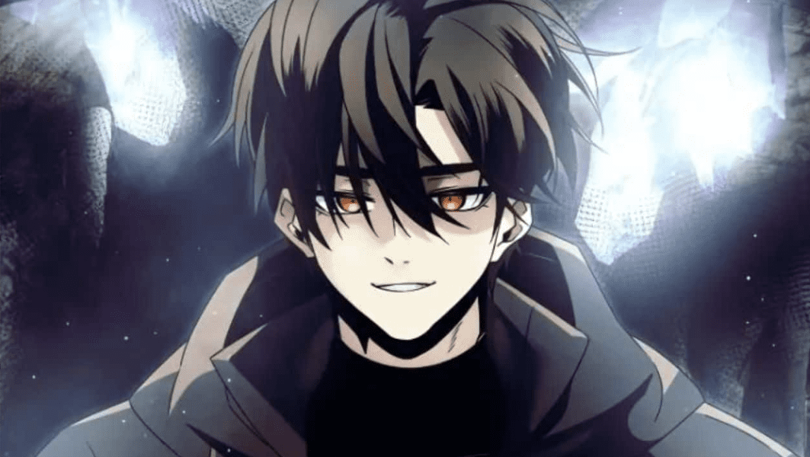

Komik adalah sebuah cerita dikemas dengan gambar yang berfungsi untuk menghibur para pembaca. Ada pun para pembaca komik ini berada di rentang usia 15-25 tahun.
Namun, tidak menutup kemungkinan bahwa para pencinta komik ada pula yang berusia 40-an tahun. Pembuat komik disebut dengan komikus...
Satu di antara negara yang industri komiknya besar adalah Jepang. Di Jepang, komik disebut juga dengan manga. Komik ini kabarnya berasal dari Amerika Serikat, Eropa Barat (terutama Prancis dan Belgia), serta Jepang.
Di Eropa, komik berkembang sejak tahun 1830-an lewat kartun dari Rodolphe Topffer, kemudian satu di antara komik terkenal di Eropa adalah The Adventures of Tintin.
Sedangkan di Amerika Serikat, komik mulai berkembang pada awal abad 20-an. Ketika itu, genre pahlawan super atau superhero mulai berkembang. Satu di antara komik bertemakan superhero yang paling terkenal adalah Superman yang sudah muncul sejak 1938.
Sementara di Jepang, komik kabarnya berkembang sejak abad ke-12. Banyak sekali komik di Jepang yang telah mendunia. Satu di antara komik atau manga Jepang yang paling mendunia adalah One Piece Eichiro Oda.
Ini buat kalian yang kebingungan pengen baca Manhwa, Manga atau Manhua, maka Neckooleri kali ini akan membahas tentang yang mana sih 5 komik terbaik menurut Neckooleri dari tiap jenis komik, tanpa basa basi lagi,
Letss Gooo!!!
Manhwa
Manhwa digunakan untuk komik Korea dan pembuatnya disebut manhwaga. Manhwa biasanya diterbitkan secara digital. Setiap episodenya diunggah setiap minggu di platform Webtoon. Kisahnya biasanya berkaitan dengan budaya kecantikan Korea, seperti True Beauty. Untuk cara membacanya, manhwa mirip dengan komik Amerika dan Eropa yang dibaca dari kiri ke kanan. Soal penerbitannya, manhwa yang muncul dalam bentuk digital hadir berwarna. Tapi jika dicetak, diterbitkan dalam warna hitam dan putih. Hal ini juga berlaku di manhua.
Solo Leveling
Sinopsis : Dunia diserang monster! Muncullah "hunter" untuk menyerang monster-monster itu. Di kalangan hunter, ada yang disebut hunter terlemah di dunia. Itulah julukan Seong Jinwoo. Masuk rumah sakit adalah kebiasaannya setelah masuk ke dungeon. Suatu hari, saat melakukan raid, suatu peristiwa tragis menimpanya. Peristiwa itu hampir merenggut nyawanya. Namun, saat tersadar, dia mendapati dirinya masih hidup dan melihat sesuatu yang tidak bisa dilihat orang lain. Sejak saat itu, kehidupan Seong Jinwoo berubah. Inilah perjalanan Seong Jinwoo untuk menjadi hunter terkuat di dunia!
Overgeared
Sinopsis : Shin Youngwoo punya kehidupan yang bernasib sial. Ia terpaksa bekerja kasar di sebuah tempat kontruksi untuk membayar biaya sekolah dan uang game yang ia gunakan. Bahkan ia juga kerja kasar di VR Game yang bernama Satisfy. Namun, hidupnya mulai berubah ketika karakternya sebagai ‘Grid’ di game menemukan ‘Pagma’s Rare Book’ hingga menjadi legendary class player.
The Return of The Disaster Class Hero
Sinopsis : Pernah ada seorang pahlawan yang dianggap terkuat di Bumi. “Tapi dia sudah mati. Bagaimana mungkin seseorang yang kita bunuh bisa hidup kembali?” “Ya. aku juga ingin melihatnya jika dia bisa hidup kembali.” Namun, 20 tahun kemudian, dia benar-benar kembali! “Kenapa kalian begitu terkejut? Apakah kalian melakukan sesuatu yang membuat kalian merasa bersalah?” ‘Bajingan-bajingan ini. Aku tidak akan membiarkan mereka begitu saja.’
Ranker’s Return (Remake)
Sinopsis : Pada Beta testing game VR , Arena, MeleeGod adalah pemain dengan peringkat terkuat! Dia menghapus karakternya dan tiba-tiba pergi. Untuk memulihkan keluarganya yang bangkrut, dia kembali ke Arena!
I Obtained a Mythic Item

Sinopsis : Yggdrasil, Pohon Dunia Mitologi Nordik, tiba-tiba muncul di Bumi. Dan bersamaan dengan itu datanglah Demonic Creature yang menghancurkan seluruh kota.
Meskipun harapan umatt manusia tersebut belum hilang, karena Sistem yang diperoleh beberapa manusia spesial.
Di dunia baru ini di mana hanya yang kuat yang selamat, Min JaeHyun menyesali pilihan yang salah yang dia buat di masa lalu … ketika suatu hari, dia mendapatkan satu-satunya item Mythic di dunia.
Manga
Manga untuk komik Jepang dan pembuatnya disebut mangaka. Biasanya telah ditetapkan sesuai demografinya, baik usia atau jenis kelamin. Misalnya manga shonen yang dibuat untuk cowok. Ceritanya lebih banyak mengusung genre action dan petualangan seperti My Hero Academia dan Naruto.Sedangkan, manga yang dibuat untuk cewek lebih menampilkan cerita keajaiban seperti Cardcaptor Sakura atau romantis seperti Fruit Basket. Banyak juga manga yang mencerminkan budaya atau kepercayaan lokal, seperti shinigami atau dewa kematian di Bleach dan Death Note. Di Jepang, manga diterbitkan di majalah mingguan atau dua mingguan seperti Shonen Jump. Jika manga itu menjadi populer, maka akan diterbitkan dalam volume yang dikumpulkan. Selain itu, manga dibaca dari kanan ke kiri. Soal penerbitannya, manga biasanya hadir.dalam warna hitam dan putih. Kecuali jika dirilis khusus maka dicetak berwarna.
One Piece
Sinopsis : Bercerita tentang seorang laki-laki bernama Monkey D. Luffy, yang menentang arti dari gelar bajak laut. Daripada kesannama besar, kejahatan, kekerasan, dia lebih terlihat seperti bajak laut rendahan yang suka bersenang-senang, alasanLuffy menjadi bajak laut adalah tekadnya untuk berpetualang di lautan yang menyenangkan dan bertemu orang-orangbaru dan menarik, sertabersama-sama mencari One Piece.
Dragon Ball
Sinopsis : Dragon Ball bercerita tentang seorang bocah bernama Goku yang hidup di tengah gunung sendirian. Dia lalu bertemu dengan Bulma, seorang gadis muda genius, yang berusaha mengumpulkan 7 bola ajaib yang katanya bisa mengabulkan semua keinginan. Bola-bola tersebut dinamakan Dragon Ball.
Naruto
Sinopsis : Naruto anak yatim piatu yang diucilkan oleh banyak orang di desanya karena dia adalah tempat tinggal dari sembilan-ekor rubah berekor, yaitu monster ekor sembilan yang sangat kuat. Meskipun demikian, Naruto memiliki impian besar untuk menjadi Hokage agar dia diakui oleh orang lain.
Detective Conan
Sinopsis : Shinichi Kudo adalah seorang detektif SMA berbakat yang sering membantu kepolisian memecahkan kasus sulit. Suatu hari, saat menyelidiki kasus misterius, ia tanpa sengaja menjadi saksi pembunuhan dan kemudian diserang oleh para penjahat. Mereka memberinya zat yang dikenal sebagai APTX 4869, yang seharusnya membunuhnya, tetapi malah membuatnya kembali ke tubuh seorang anak berusia tujuh tahun.
Doraemon
Sinopsis : Nobita Nobi adalah seorang anak laki-laki yang canggung, malas, dan sering kali tidak beruntung. Dia memiliki masalah di sekolah, sering diganggu oleh teman-temannya, dan kesulitan dalam banyak hal. Suatu hari, buyutnya mengirimkan Doraemon, seekor kucing robot berwarna biru dari abad ke-22, kembali ke masa lalu untuk membantu Nobita. Doraemon dikirim untuk membantu memperbaiki nasib buruk Nobita dan membantunya menjalani kehidupan yang lebih baik.
Manhua
Manhua digunakan untuk komik China dan pembuatnya disebut manhuajia. Manhua juga biasanya diterbitkan secara digital dan tiap episodenya diunggah setiap minggu di platform Webtoon.Sedangkan, ceritanya sering menampilkan tema wuxia atau seni bela diri. Mirip manga, manhua juga dibaca dari kanan ke kiri. Soal penerbitannya, manhua mirip dengan manhwa yakni hadir berwarna untuk versi digitalnya. Tapi diterbitkan dalam warna hitam dan putih jika dicetak.
Apotheosis
Sinopsis : Luo Zheng, anak dari keluarga utama Luo, keluarga yang dikhianati oleh keluarga cabang dan sampai membuat dirinya menjadi budak.
Demi menyelamatkan adiknya, Luo Zheng memasuki jalan seni beladiri dan berusaha menjadi lebih kuat.
Bertahun-tahun berlalu, Luo zheng telah melewati segala rintangan yang menghadang di depannya dan berhasil menyelamatkan adiknya, Luo Yan.
Namun, perjalanan Luo Zheng tidak sampai di sana, dia masih harus menghadapi dunia yang jauh lebih besar dari yang dibayangkannya.
Magic Emperor
Sinopsis : Karena dia memiliki warisan Ancient Demonic emperor, Demonic Emperor Zhuo Yifan menemui nasib sial karena dikhianati dan dibunuh oleh murid kepercayaannya. Setelah terlahir kembali, kultivasinya kembali ke nol dan dia terjebak oleh heart demon, tidak diberi pilihan selain menjadi pengurus rumah tangga dari satu-satunya nona tertua Keluarga Luo. Dari menjadi Demonic Emperor menjadi pengurus rumah tangga yang tidak penting, bagaimana dia bisa bergaul dengan “eart demon eldest miss” dan kekuatan apa yang akan dia peroleh untuk memimpin dirinya sendiri dan keluarga yang menurun untuk bangkit kembali ke puncak benua!
I Copy Talents
Sinopsis : Pemuda Ye Tian memperoleh kemampuan untuk menyalin skill orang lain, dan sekarang bertarung melawan surga untuk mengubah nasibnya. Dia berjuang untuk bertahan hidup dan melindungi saudara perempuannya dari invasi mahkluk asing. Untuk menjadi lebih kuat, ia mulai menjelajahi dunia yang tidak dikenal, dan secara bertahap mengungkapkan rahasia di balik invasi dimensi alien.
Evolution Begins With A Big Tree
Sinopsis : Terlahir kembali sebagai pohon willow! ? Kebangkitan energi spiritual, munculnya segala sesuatu. Willow yang terlahir kembali juga telah memulai jalur evolusi. Itu bisa berevolusi tanpa batas, apakah itu “kekuatan ilahi” atau “kutukan”?
My Harem Grew So Large, I Was Forced to Ascend
Sinopsis : Ye Gulou merupakan orang pertama yang dapat melakukan kultivasi abadi lewat jalan tersulit, yakni Yang murni tak terikat. Ia menjadi salah satu dari 6 orang terkuat di muka bumi. Tapi, melakukan kultivasi lewat Yang murni tak terikat artinya ia tak bisa berhubungan dengan wanita, jika dilanggar, maka dia akan mati?! Lalu bagaimana dengan haremnya yang sudah tumbuh hingga sekarang? yang diisi oleh 5 gadis terkuat di muka bumi?! dikejar kelima gadis yang mencari kepastian akan cinta Ye Gulou pada mereka, bagaimanakah nasib yang akan Ye Gulou hadapi?